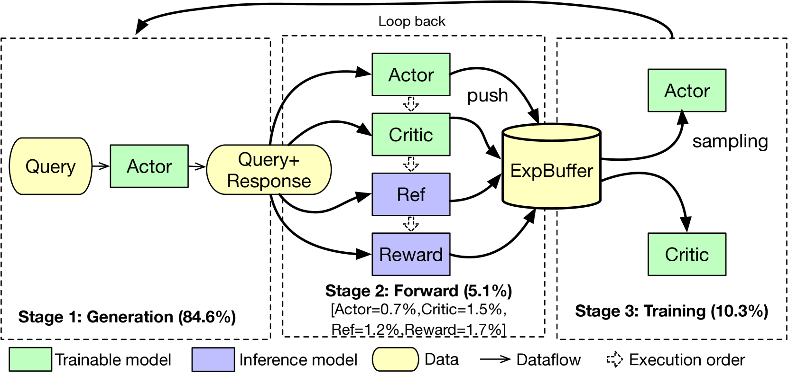
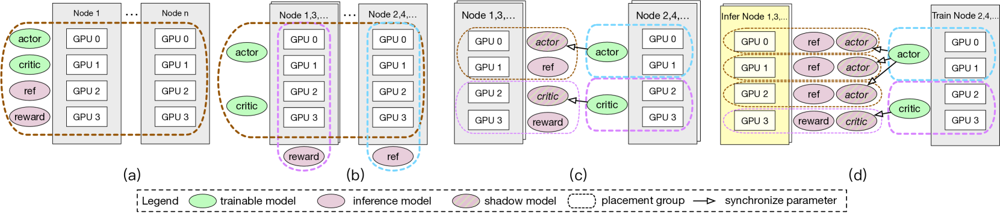
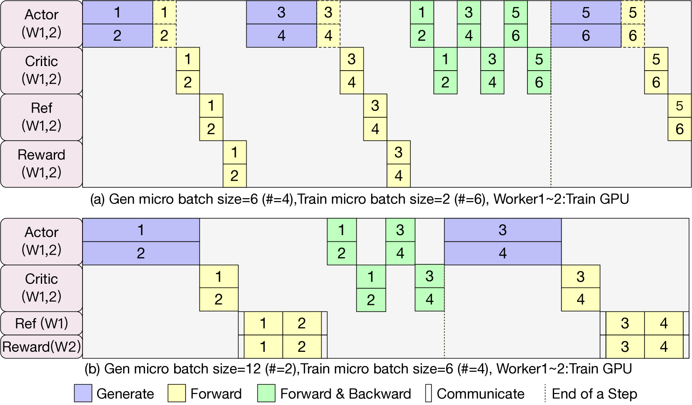
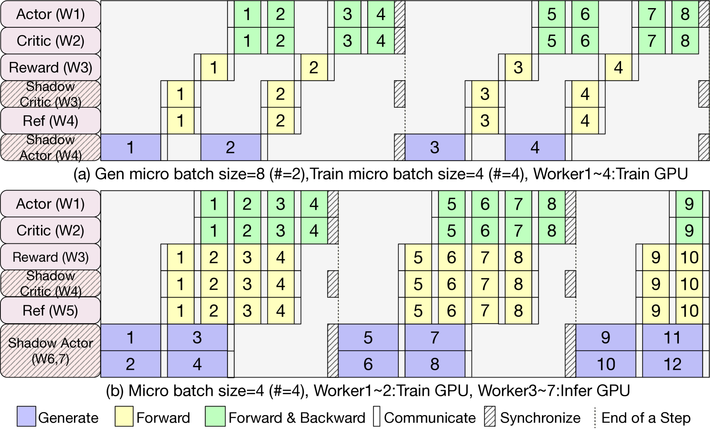
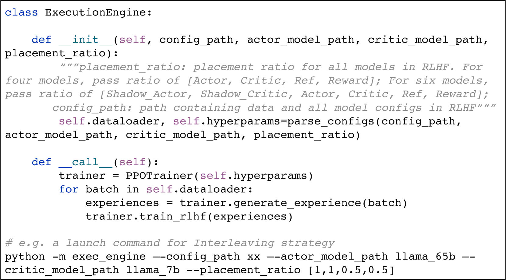

FlexRLHF提出两种模型放置策略（Interleaving和Disaggregated），打破RLHF训练中四个模型Co-located在所有设备上的固定范式，通过精细化的设备分配和训练/推理运行时解耦，在大规模场景下实现最高11×的吞吐量提升。
---
RLHF训练涉及4个相互依赖的模型（Actor、Critic、Ref、Reward），现有框架（DeepSpeed-Chat、trlX）采用Co-located策略将所有模型放在每张卡上，导致内存冗余严重、通信开销大、Generation阶段成为瓶颈（占85%+时间），训练效率极低。
两种灵活的模型放置策略：(1) Interleaving策略 — 将无依赖关系的Ref和Reward模型分别放在不同设备组上，减半内存冗余和通信参与者；(2) Disaggregated策略 — 引入Shadow Actor/Critic模型，物理分离训练和推理运行时，允许对Generation阶段使用专门的推理优化（如TP+vLLM），并支持异构GPU。核心区别于Co-located：不再"一视同仁"，而是按模型特性和阶段特性差异化放置。
Disaggregated策略在65B模型+16×8 GPU场景下达到11×加速（vs DeepSpeed-Chat）；Interleaving策略在AC-Share结构下对比trlX达到11×加速（4×8 GPUs, 7B模型）。Generation阶段时间占比从93%降至56%。
RLHF的PPO训练需要4个模型（Actor、Critic、Ref、Reward）协同工作，经历Generation→Forward→Training三阶段。现有框架把四个模型"绑在一起"放在每张卡上（Co-located策略），就像让四个厨师都挤在同一个小厨房里做不同的菜 — 空间浪费（内存冗余）、互相干扰（通信开销）、最慢的工序（Generation占85%）决定了整体速度。
作者的"aha moment"是：这四个模型并非都需要出现在每张卡上。Ref和Reward模型在Forward阶段完全独立，可以放在不同的设备组上并行执行；Actor/Critic在训练时和推理时的资源需求完全不同（训练要optimizer state，推理只要参数）。这就像一个工厂发现"装配线"和"质检线"不需要共享所有工具 — 分开布置反而更高效。
👉 类比：Co-located就像所有人共用一个超大办公室；Interleaving是给不同团队分配专属会议室；Disaggregated是把研发部门（训练）和测试部门（推理）搬到不同楼层，各自用最适合的设备。
1. 分析依赖关系：识别出Ref和Reward在Forward阶段无数据依赖，Actor/Critic在训练阶段无同步需求
2. Interleaving策略：将Ref和Reward分配到不同设备组（各占50%设备），通过AllGather/AlltoAll进行少量数据交换，但用计算-通信重叠隐藏开销
3. Disaggregated策略：创建Shadow Actor/Critic副本专门做推理，与训练模型物理分离到不同设备组；推理设备用TP+DP，训练设备用ZeRO/Megatron；通过micro-batching pipeline化执行隐藏bubble
4. Execution Engine抽象：通过Model Placement Ratio（0~1的比例值）简化配置，自动处理设备映射和中间数据通信
5. 异构支持：Disaggregated策略允许将推理模型放在低端GPU（如V100）上，训练模型放在高端GPU（如A100）上





#### Table I: Interleaving vs Co-located (AC-NonShare, DeepSpeed-Chat)
| # GPUs | Strategy | 7B | 13B | 33B | 65B |
|---|---|---|---|---|---|
| 8 | DeepSpeed-Chat | 16.12 | 7.32 | 0.69 | OOM |
| 8 | Interleave₁ | **17.35** | **7.63** | 0.69 | OOM |
| 2×8 | DeepSpeed-Chat | 32.15 | 15.35 | 0.64 | 0.14 |
| 2×8 | Interleave₁ | **34.70** | **15.66** | 0.64 | 0.14 |
| 2×8 | Interleave₂ | 18.27 | 8.27 | **0.97** | **0.24** |
| 4×8 | DeepSpeed-Chat | 61.95 | 28.60 | 0.93 | 0.20 |
| 4×8 | Interleave₁ | **69.44** | 28.54 | 0.95 | 0.20 |
Takeaway: Interleave₁在小模型（7B/13B）上有7-12%提升；Interleave₂在大模型（33B/65B）+ZeRO-3场景下提升52-71%，因为将Actor限制在单节点内避免了跨节点AllGather。
#### Table II: Disaggregated vs DeepSpeed-Chat (AC-NonShare)
| # GPUs | Strategy | 33B | 65B |
|---|---|---|---|
| 4×8 | DeepSpeed-Chat | 0.93 | 0.20 |
| 4×8 | Disaggregated | **4.76** | **1.75** |
| 16×8 | DeepSpeed-Chat | 2.11 | 0.55 |
| 16×8 | Disaggregated | **10.07** | **6.80** |
Takeaway: Disaggregated策略在大规模场景下碾压式领先，65B@16×8达到11×加速。核心来源于将Generation解耦后可使用节点内TP，避免ZeRO-3的跨节点通信。
#### Table V: Interleaving vs trlX (AC-Share, Scalability)
| # GPUs | trlX | Interleaving | Speedup |
|---|---|---|---|
| 1×8 (7B) | 6.21 | **27.27** | 4.4× |
| 2×8 (7B) | 7.76 | **54.71** | 7.1× |
| 4×8 (7B) | 8.87 | **109.18** | **12.3×** |
| 1×8 (13B) | 2.22 | **11.76** | 5.3× |
| 4×8 (13B) | 4.24 | **46.16** | **10.9×** |
Takeaway: trlX的单卡Reward瓶颈在扩展时完全暴露——设备数增加但吞吐几乎不变。FlexRLHF近乎线性扩展。
1. Disaggregated策略利用PPO的off-policy特性——训练阶段从buffer采样，不需要与forward阶段严格同步，因此Shadow模型的参数可以周期性同步而非实时同步，这不是异步训练，不影响模型收敛。
2. Interleaving策略中新增的AllGather和AlltoAll通信开销可以通过计算-通信流水线重叠（不同CUDA stream）来近乎完全隐藏。
RLHF训练涉及4个模型（Actor、Critic、Ref、Reward）的复杂协同，现有框架采用Co-located策略将所有模型放在每个设备上，导致内存冗余和通信开销严重，且Generation阶段成为性能瓶颈（占85%+时间）。
FlexRLHF提出两种创新的模型放置策略：(1) Interleaving策略将无依赖的Ref和Reward模型放在不同设备组，减半内存冗余和通信参与者数；(2) Disaggregated策略引入Shadow Actor/Critic模型，将训练和推理物理分离到不同设备组，允许各自使用最优的并行策略（训练用ZeRO/Megatron，推理用TP+DP）。框架通过Model Placement Ratio抽象简化配置，支持异构GPU集群。
实验在Llama 7B-65B模型、A100集群上验证，Disaggregated策略在65B@16×8 GPU配置下达到11×加速（vs DeepSpeed-Chat），Generation阶段占比从93%降至56%。对比trlX的AC-Share结构，Interleaving策略在4×8 GPU下实现12×加速，得益于消除了trlX的单卡Reward瓶颈。
#### 2a. End-to-End Data Flow
[Prompt Dataset] → [Generation Stage] → [Forward Stage] → [Training Stage] → [Model Update]
↓ Actor.generate() ↓ All 4 models ↓ Actor + Critic
↓ Auto-regressive ↓ forward ↓ PPO loss
↓ 85%+ total time ↓ ~5% time ↓ ~10% time
Co-located策略下的数据流:
| Stage | Input → Output | Location | Communication | Duration % |
|---|---|---|---|---|
| Generation | Prompts → Responses | All GPUs (Actor) | AllGather params in ZeRO-3 | ~85% |
| Actor Forward | (Q,R) → logits | All GPUs | ZeRO comm | ~2% |
| Ref Forward | (Q,R) → ref_logits | All GPUs | ZeRO comm | ~2% |
| Reward Forward | (Q,R) → scores | All GPUs | ZeRO comm | ~1% |
| Critic Forward | (Q,R) → values | All GPUs | ZeRO comm | ~1% |
| Experience Buffer | All outputs → buffer | CPU/GPU memory | None | negligible |
| Actor Training | Buffer batch → grad update | All GPUs | ZeRO allreduce | ~5% |
| Critic Training | Buffer batch → grad update | All GPUs | ZeRO allreduce | ~5% |
Disaggregated策略下的数据流:
| Stage | Input → Output | Location | Communication |
|---|---|---|---|
| Generation | Prompts → Responses | Inference GPUs (Shadow Actor, TP+DP) | Intra-node TP only |
| Forward | (Q,R) → all outputs | Inference GPUs (Shadow Actor/Critic + Ref + Reward) | P2P within inference group |
| Data Transfer | Experience data → Training GPUs | Cross-group | P2P send/recv |
| Training | Buffer → grad update | Training GPUs (Actor + Critic, Megatron) | Intra-group ZeRO/TP |
| Param Sync | Trained params → Shadow models | Cross-group | Broadcast/P2P (periodic) |
#### 2b. Data Movement Hotspots
1. ZeRO-3 AllGather during Generation (Co-located): 每次Generation需要AllGather完整模型参数到每张卡，对65B模型约130GB参数。频率：每个Generation step一次。Disaggregated策略完全消除此开销——Shadow Actor使用TP，参数常驻。
2. Interleaving策略的AllGather+AlltoAll: Ref/Reward模型在Forward前需要AllGather收集所有(Q,R)数据，Forward后AlltoAll分发结果。频率：每rollout step一次。通过计算-通信重叠隐藏。
3. Disaggregated的P2P Experience Transfer: 推理设备→训练设备的experience数据传输。频率：每micro-batch一次。通过pipeline化执行与计算重叠。
Control plane vs Data plane: 未明确分离。Execution Engine作为control plane管理设备分配和通信拓扑；模型计算和数据传输为data plane。
Failure handling: 论文未讨论容错机制，这是一个明显缺失。
| Innovation | Mechanism | Benefit | Cost/Tradeoff |
|---|---|---|---|
| Interleaving Placement | 将无依赖模型（Ref/Reward）放在不同设备组，各占50%设备 | 减半内存冗余，减少ZeRO通信参与者，增大batch size | 新增AllGather+AlltoAll通信（但可被重叠隐藏）；大模型+ZeRO-3时Interleave₁无效 |
| Disaggregated Placement | 创建Shadow Actor/Critic用于推理，物理分离训练和推理到不同设备组 | Generation可用TP代替ZeRO-3 AllGather，训练/推理pipeline并行 | 需额外GPU内存存放Shadow模型；需周期性参数同步；不适合小规模场景 |
| Model Placement Ratio | 用0-1比例值配置每个模型的设备分配比例，自动生成设备映射 | 用户只需设[1,1,0.5,0.5]即可配置Interleaving | 最优比例仍需手动调优或依赖guideline |
| Pipeline Micro-batching | Disaggregated策略中Generation/Forward/Training按micro-batch pipeline执行 | 隐藏bubble开销，提高设备利用率 | 增加实现复杂性；micro-batch数需调优 |
| Heterogeneous Device Support | Disaggregated分离后，推理模型可放低端GPU（V100），训练放高端GPU（A100） | 利用闲置异构资源，降低成本 | 不同GPU间只能用以太网连接，通信受限；实验仅14.49%提升 |
批判性评价: 调度仍然较为静态——设备分组和比例在训练前确定，运行时不动态调整。如果不同stage的workload随训练进度变化（如Generation越来越快或慢），无法自适应调节资源分配。
| Scenario | Workload Pattern | Goal | Why existing fails |
|---|---|---|---|
| 中小模型RLHF (7B-13B) | 4模型全放单节点/少节点 | 最大化throughput | Co-located浪费内存冗余 |
| 大模型RLHF (33B-65B) 同构 | 多节点，ZeRO-3必须 | 最大化throughput | ZeRO-3跨节点AllGather开销巨大 |
| 大模型RLHF 异构 (A100+V100) | 混合GPU集群 | 利用闲置资源 | Co-located无法在异构GPU上运行 |
| AC-Share结构 | Reward模型需独立放置 | 消除单卡瓶颈 | trlX把Reward放单卡，扩展性差 |
Primary bottleneck per scenario:
#### 6a. Metrics
| Metric | Definition | Unit | Higher/Lower |
|---|---|---|---|
| Sample Throughput | 端到端每秒处理的样本数 | samples/sec | Higher |
| Maximum Batch Size | 不OOM情况下最大可用batch size | # samples | Higher |
| Generation Stage Duration % | Generation阶段占总时间的比例 | % | Lower |
批判: 指标过于单一。缺少GPU utilization、通信占比、内存效率、cost/sample等关键指标。未报告P99延迟或per-step time breakdown。
#### 6b. Before-After Comparison
| Optimization | Metric | Baseline | After | Improvement | Conditions |
|---|---|---|---|---|---|
| Interleave₁ | Throughput | 16.12 | 17.35 | +7.6% | 7B, 8 GPUs, AC-NonShare, ZeRO-2 |
| Interleave₁ | Throughput | 61.95 | 69.44 | +12.1% | 7B, 4×8 GPUs, AC-NonShare |
| Interleave₂ | Throughput | 0.14 | 0.24 | +71% | 65B, 2×8 GPUs, ZeRO-3 |
| Disaggregated | Throughput | 0.93 | 4.76 | **5.1×** | 33B, 4×8 GPUs, ZeRO-3 |
| Disaggregated | Throughput | 0.55 | 6.80 | **12.4×** | 65B, 16×8 GPUs, ZeRO-3 |
| Disaggregated | Gen Stage % | 93.31% | 56% | -37pp | 33B, 4×8 GPUs |
| Interleaving (vs trlX) | Throughput | 6.21 | 27.27 | **4.4×** | 7B, 1×8, AC-Share, GC-ON |
| Interleaving (vs trlX) | Throughput | 8.87 | 109.18 | **12.3×** | 7B, 4×8, AC-Share, GC-ON |
| Interleaving (vs trlX) | Max Batch | 2 | 50 | **25×** | 13B, AC-Share |
| Heterogeneous | Throughput | 0.69 | 0.79 | +14.5% | 33B, 8 A100 + 8 V100 |
#### 6c. Bottleneck Shift Analysis
Co-located baseline: Communication-bound (ZeRO-3 AllGather during Generation, 93% time)
→ After Interleaving: Still Generation-bound but reduced (fewer comm participants)
→ After Disaggregated: Generation reduced to 56%, Training becomes more visible
Remaining bottleneck: Generation still dominant; pipeline bubble overhead; param sync cost
关键观察: Disaggregated策略成功地将Generation从93%降到56%，但并没有完全消除Generation瓶颈。进一步优化需要更强的推理引擎（如vLLM/SGLang的speculative decoding等）。
#### 6d. Baselines & Fairness
Guideline总结:
1. 资源有限 → Interleaving（Ref/Reward可放单节点时）或 Co-located
2. 资源充足 → Disaggregated（30-50%设备给Shadow Actor）
3. 异构集群 → Heterogeneous Disaggregated（低端GPU做推理，高端做训练）
| Layer | Impact |
|---|---|
| Algorithm | 为PPO训练提供了高效分布式范式，但PPO正在被DPO/GRPO替代；Disaggregated的训练-推理分离思想对GRPO（也有generation阶段）同样适用 |
| Kernel | 不依赖自定义kernel，使用标准DeepSpeed/Megatron/vLLM kernel。Disaggregated策略的价值在于允许推理端自由选择最优kernel |
| LLM | 支持标准Transformer架构（Llama系列），MoE模型的支持未验证——MoE的expert parallelism会增加placement的复杂度 |
| Agent | N/A — 纯训练框架 |
| Ops | 缺乏自动化配置能力，需要人工根据guideline确定最优配置；无自动profiling或auto-tuning功能 |
| Feature | FlexRLHF | DeepSpeed-Chat | trlX | OpenRLHF (后发) |
|---|---|---|---|---|
| Model Placement | Interleaving + Disaggregated + Co-located | Co-located only | Co-located variant (Reward单卡) | Ray-based placement |
| Training-Inference分离 | ✅ (Disaggregated) | ❌ (Hybrid Engine混合) | ❌ | ✅ (vLLM integration) |
| 异构GPU支持 | ✅ | ❌ | ❌ | 部分支持 |
| Pipeline执行 | ✅ (micro-batching) | ❌ (sequential) | ❌ (sequential) | ✅ |
| AC-Share支持 | ✅ | ❌ | ✅ | ✅ |
| AC-NonShare支持 | ✅ | ✅ | ❌ | ✅ |
| 推理引擎集成 | Megatron TP | Hybrid Engine | HuggingFace | vLLM |
| 配置简易度 | 中等（Placement Ratio + guideline） | 低（自动但不灵活） | 低 | 高（Ray自动调度） |
| 开源 | ❌ | ✅ | ✅ | ✅ |
| 扩展性 (>64 GPU) | ✅ (tested 128 GPUs) | ✅ | ❌ (单卡瓶颈) | ✅ |
| 容错 | 未提及 | CheckPoint | 未提及 | CheckPoint |